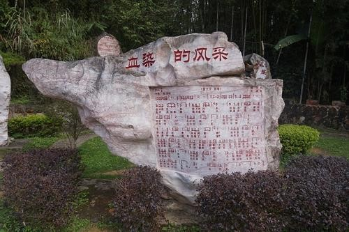
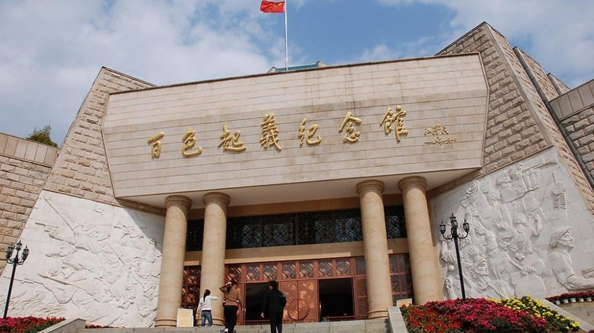
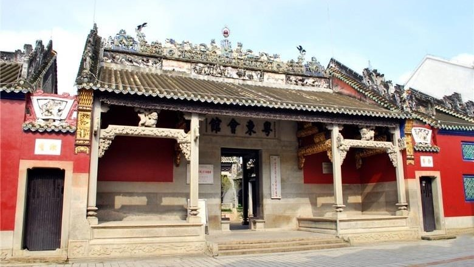

云 · 游
云 · 游
助人为乐，无私奉献是中华民族的传统美德、珍贵品质、宝贵精神。我们项目的核心便是发扬这种美德和精神，凝聚大家的爱心，为社会公益事业贡献出自己的一份力量。
研学旅行是由学校根据区域特色、学生年龄特点和各学科教学内容需要，组织学生通过集体旅行、集中食宿的方式走出校园，在与平常不同的生活中拓展视野、丰富知识，加深与自然和文化的亲近感，增加对集体生活方式和社会公共道德的体验。研学旅行继承和发展了我国传统游学、“读万卷书，行万里路”的教育理念和人文精神，成为素质教育的新内容和新方式。提升中小学生的自理能力、创新精神和实践能力。
我们将以此为中介平台，推出“云研学”的模式，让大家在疫情的大背景下，通过我们的视频拍摄制作、历史文化与红色故事讲述，让“云研学”走进大家的生活。我们制作的所有作品都将在此平台上免费向大家展示。
通过“云研学”的学习，通过网站、短视频平台的传播，激发了中小学生对于红色文化的兴趣。培养了他们的爱国主义情怀和艰苦奋斗的精神。爱国主义、艰苦奋斗是中国红色文化的精髓。我们寻访前辈人的足迹，缅怀他们的战斗历程，就是要将这两种精神继续发扬下去，永葆其强大的推动力量。
图片展示
景点展示


百色起义纪念馆
百色起义纪念馆位于广西自治区百色市东北郊迎龙山。由张云逸大将提议，经广西壮族自治区党委批准，成立于1961年，原名“右江革命文物馆”。1996年11月1日，经江泽民同志题写，正式改名为“百色起义纪念馆”。

中国工农红军第七军军部旧址
中国工农红军第七军军部旧址，坐落于广西百色市解放街39号“粤东会馆”内。“粤东会馆”始建于康熙五十九年（1720年）。1929年12月11日，由邓小平、张云逸同志发动和领导的百色起义总指挥部就设在这里。1977年8月17日，邓小平同志亲自为旧址题写了址名：“中国工农红军第七军军部旧址”。1987年1月13日，旧址被国务院公布为全国重点文物保护单位。
友谊关景区
友谊关景区位于广西自治区凭祥市，该关设立于汉代，现为中国一类边贸口岸。友谊关景区占地面积46.50公顷，由 友谊关关楼、左弼山古炮台、右辅山古炮台群、左右辅山古城墙及登山古道、大清国万人坟、广西全边对讯署（法式楼）等主要景点组成。